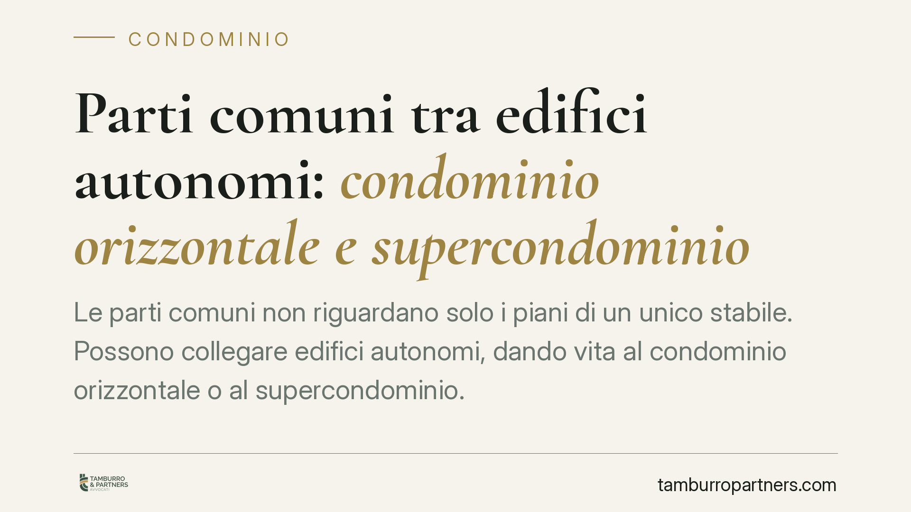

Parti comuni tra edifici autonomi: condominio orizzontale e supercondominio
Le parti comuni non riguardano solo i piani di un unico stabile. Possono collegare edifici autonomi, dando vita al condominio orizzontale o al supercondominio. Capire quale regime si applica incide su spese, assemblee e manutenzioni. Vediamo cosa dice il codice civile e come orientarsi quando più fabbricati condividono strade, impianti o servizi.

Il caso: quando edifici distinti hanno beni in comune
Non serve vivere nello stesso palazzo per essere comproprietari di un bene. Più edifici autonomi, ciascuno con la propria struttura, possono condividere strade interne, parcheggi, impianti idrici o fognari, cabine elettriche o aree verdi.
In questi casi la legge non lascia un vuoto: estende la disciplina condominiale anche a queste situazioni. La giurisprudenza di legittimità, in modo ormai consolidato, distingue due figure principali: il condominio orizzontale e il supercondominio.
Inquadramento normativo
Il punto di partenza è l'art. 1117 del Codice civile, che elenca i beni presuntivamente comuni: suolo, fondazioni, muri maestri, tetti, scale, impianti e servizi di uso comune. L'elenco opera una presunzione: un bene è comune salvo che un diverso regime risulti dal titolo.
Qui sta un principio decisivo. L'art. 1117 c.c. ha natura dispositiva: la comproprietà può essere esclusa o modificata solo tramite un titolo di natura contrattuale (ad esempio l'atto di acquisto o il regolamento contrattuale predisposto dal costruttore e accettato dagli acquirenti). Un regolamento di origine assembleare, approvato a maggioranza, non può derogare al regime legale di proprietà: può disciplinare l'uso dei beni comuni, non la loro titolarità.
Per gli aggregati di più edifici il riferimento è l'art. 1117-bis c.c., introdotto dalla L. 220/2012, che estende la disciplina del condominio a tutti i casi in cui più unità immobiliari, o più edifici, abbiano parti comuni ai sensi dell'art. 1117 c.c. Sul piano della governance interviene l'art. 67 delle disposizioni di attuazione del Codice civile, che regola la rappresentanza in assemblea nel supercondominio e, per gli aggregati con più di sessanta partecipanti, impone la nomina di un rappresentante per ciascun edificio nelle decisioni sulle parti comuni a tutti.
Condominio orizzontale e supercondominio: la differenza
Il condominio orizzontale ricorre quando più fabbricati, tipicamente villette o edifici bassi affiancati, condividono beni comuni pur essendo strutturalmente distinti. La giurisprudenza lo riconduce senza incertezze alla disciplina condominiale degli artt. 1117 e seguenti c.c.: non è una figura atipica, ma una normale applicazione delle regole sul condominio a uno sviluppo in orizzontale anziché in verticale.
Il supercondominio si configura quando più condomini autonomi, ciascuno già dotato di proprie parti comuni e di propria organizzazione, sono legati da ulteriori beni o servizi condivisi: viale di accesso, impianto di riscaldamento centralizzato comune, portineria unica, aree a verde. Ogni edificio resta un condominio a sé; sopra di essi si innesta una struttura di secondo livello che gestisce i beni comuni a tutti.
Implicazioni pratiche: spese e decisioni
La qualificazione non è un esercizio teorico. Da essa dipende chi paga cosa e chi decide cosa.
La ripartizione delle spese segue l'art. 1123 c.c.: le spese per la conservazione e il godimento delle parti comuni si dividono in proporzione al valore della proprietà di ciascuno, salvo diversa convenzione; se un bene serve i condomini in misura diversa, la spesa si ripartisce in proporzione all'uso; se l'impianto o il servizio è destinato a servire solo una parte dell'edificio o del complesso, grava solo su chi ne trae utilità.
Nel supercondominio, inoltre, occorre distinguere con precisione le spese dei beni comuni all'intero complesso da quelle interne a ciascun condominio. Confondere i due piani è una delle cause più frequenti di contenzioso sui rendiconti.
Cosa fare in concreto
- Verificate il titolo. Recuperate l'atto di acquisto e l'eventuale regolamento contrattuale: solo lì può risultare una valida deroga all'art. 1117 c.c. Non fidatevi delle prassi consolidate di fatto.
- Mappate i beni comuni. Individuate quali beni e impianti servono tutti gli edifici e quali solo alcuni: è la base per un riparto corretto ex art. 1123 c.c.
- Controllate la rappresentanza in assemblea. Nei complessi con oltre sessanta partecipanti verificate che sia stato nominato il rappresentante di edificio previsto dall'art. 67 disp. att. c.c.
- Distinguete i bilanci. Pretendete rendiconti che separino le spese del supercondominio da quelle dei singoli condomini.
- Non cercate di modificare la proprietà in assemblea. Per incidere sulla titolarità dei beni comuni serve un titolo contrattuale: consigliamo di farsi assistere prima di approvare delibere che ne presuppongono la modifica.
---
Contributo informativo a cura di Tamburro & Partners - Avv. Giuseppe Tamburro. Non costituisce parere legale.
Ogni condominio ha una storia a sé.
Se gestisci un'amministrazione e vuoi un confronto su una specifica questione condominiale, scrivi allo studio. Ti rispondiamo entro un giorno lavorativo.